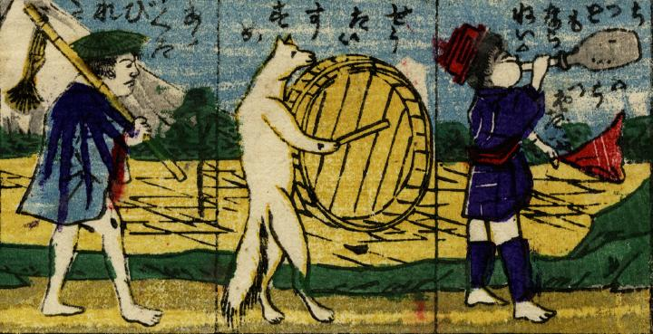

狐とともに行進する男たち。真ん中の狐は桶を太鼓代わりにしている。
著作者：国利／出典：親書誌：U426_nichibunken_0277：しん板狐にばかされ尽；シンパン キツネ ニ バカサレズクシ／日付：2014／資源識別子：U426_nichibunken_0277_0007_0000
Copyright (c)2010- International Research Center for Japanese Studies, Kyoto, Japan. All rights reserved.